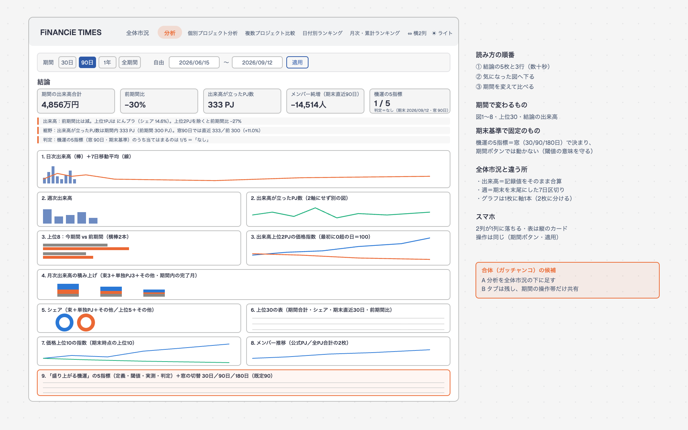
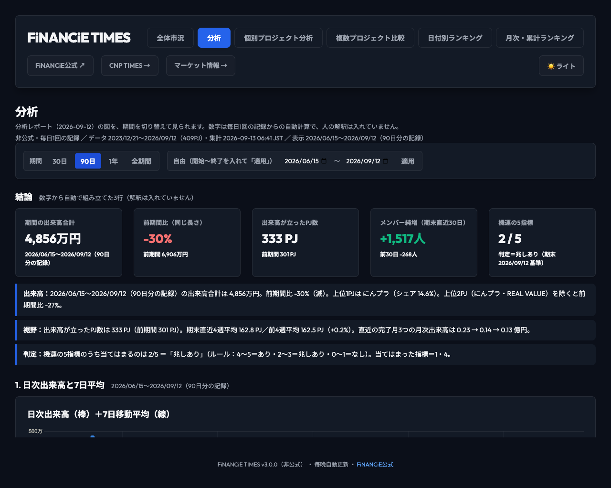
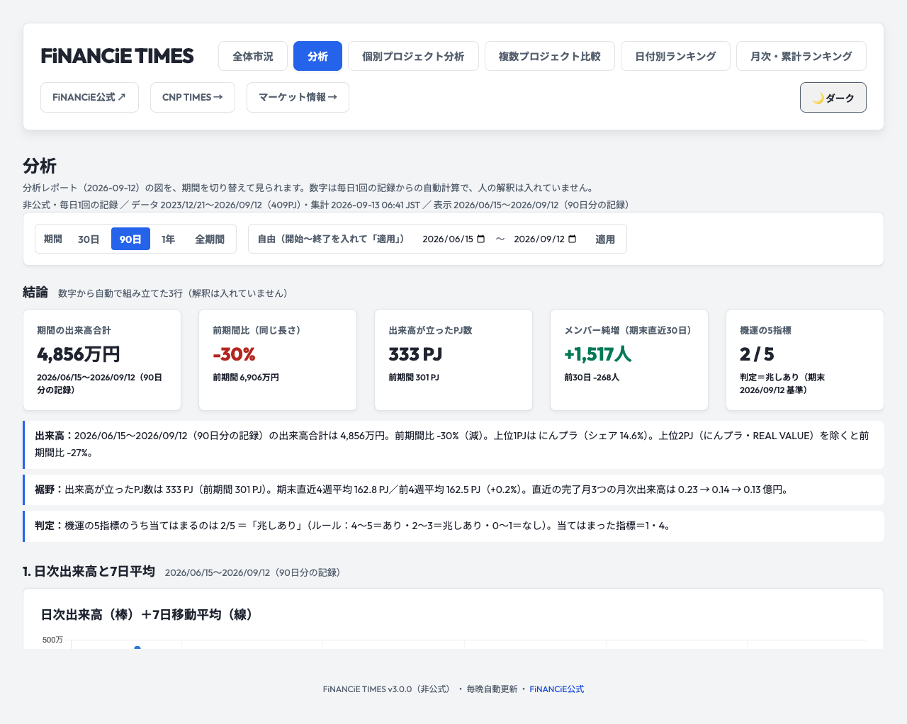
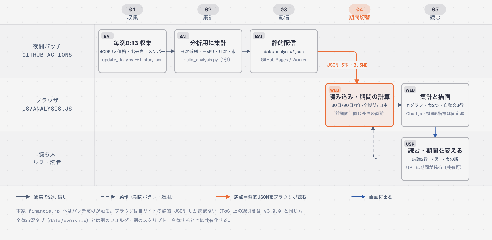

ステージングで見られます。全体市況 v3.1 とは別タブ・別ファイルで作ったので、本番は触っていません。
URL＝https://financie-times-analysis-staging.ruku-practice.workers.dev/financie/?tab=analysis（noindex・v3.1 のステージングとは別 Worker）
おすすめ＝出す（別タブなので全体市況に影響なし）。出すなら毎晩の処理に build_analysis.py を足す発注が1つ要る。
分析＝生の記録値（レポートと同じ数字）／全体市況＝24h＝30日の日を欠測扱い。差は 1〜3%。おすすめ＝当面は両方の脚注で明記、合体時に決める。
A 全体市況の下に足す／B タブは2つのまま操作帯だけ共有（おすすめ）／C 区画ごとに差し込む。詳細は下の表。



| 区画 | 期間ボタンで | 定義（1行） |
|---|---|---|
| 結論（KPI 5枚＋自動文3行） | 変わる | 期間合計・前期間比（同じ長さの直前）・出来高が立ったPJ数・メンバー純増（期末直近30日）・機運 n/5。文はテンプレ固定＝解釈は入れない |
| 1 日次出来高＋7日平均 | 変わる | 各日の24h出来高の全PJ合算（生の記録値） |
| 2 週次出来高・出来高が立ったPJ数 | 変わる | 期末を末尾にした7日区切り。2軸にせず2枚 |
| 3 上位8の今期間 vs 前期間・上位2の価格指数 | 変わる | 前期間＝同じ長さの直前。指数の基準＝最初に0より大きい日 |
| 4 月次出来高（束＋単独PJ＋その他） | 変わる | 翌月1日の30日出来高。期間内の完了月が3未満なら直近6か月 |
| 5 シェア（2つの円）・6 上位30の表 | 変わる | 期間合計で割る。名前＝個別ページ・↗＝本家 |
| 7 価格上位10の指数・8 メンバー（2枚） | 変わる | 上位10＝期末時点の価格。メンバーは公式PJと全PJ合計 |
| 9 機運の5指標 | 変わらない（期末基準） | 閾値は30日窓で決めた値なので、窓を期間に連動させない。期末（自由期間の終了日）だけが効く |
| 案 | 中身 | 良い点 | 弱い点 |
|---|---|---|---|
| A | 「分析」を全体市況タブの下に足す（タブ1つ） | 1画面で市況→分析まで読める | 縦に長い（5区画＋9区画） |
| B | タブは2つのまま、期間の操作帯・テーマ・凡例を共有 | 各タブが短い・作りが単純・検査を壊しにくい | 期間を2か所で選ぶ（URL で同期は可能） |
| C | 全体市況の各区画に分析の図を差し込む | 図ごとに比較できる | 欠測の扱い・週の切り方を先に統一する必要 |
どの案でも先に決めること＝欠測の扱い（②）・週の切り方（分析＝期末末尾の7日／全体市況＝ISO週）・data/overview と data/analysis の共通化（v24・price が重複）。

| 段 | 結果 |
|---|---|
| 機械の検査（38項目） | ALL PASS（06:53）。独立計算と一致・レポートの数字（14.97M／11.15M・162.5／163.0・+1,494／−268・3/10・2/5「兆しあり」）を再現・両テーマ AA・スマホ横はみ出しなし |
| 断（1回目・作り手の目） | 口寄せ中（結果は完了報告に追記） |
| エマ（2回目・初見の目・PC 1280 主） | 断の後 |
本番反映・push・移設・本家への巡回・全体市況との合体・名寄せ（分析レポート担当の名寄せ表が届いたら build_analysis.py の ALIASES に足すだけ）。
作業場所＝.claude/worktrees/analysis-tab（ブランチ feature/analysis-tab・起点 6528da66）。設計書＝docs/2026-09-13_分析タブ_設計.md。完了報告＝company/logs/2026-09-13_FiNANCiE-TIMES-Web_分析タブ_完了報告.md。